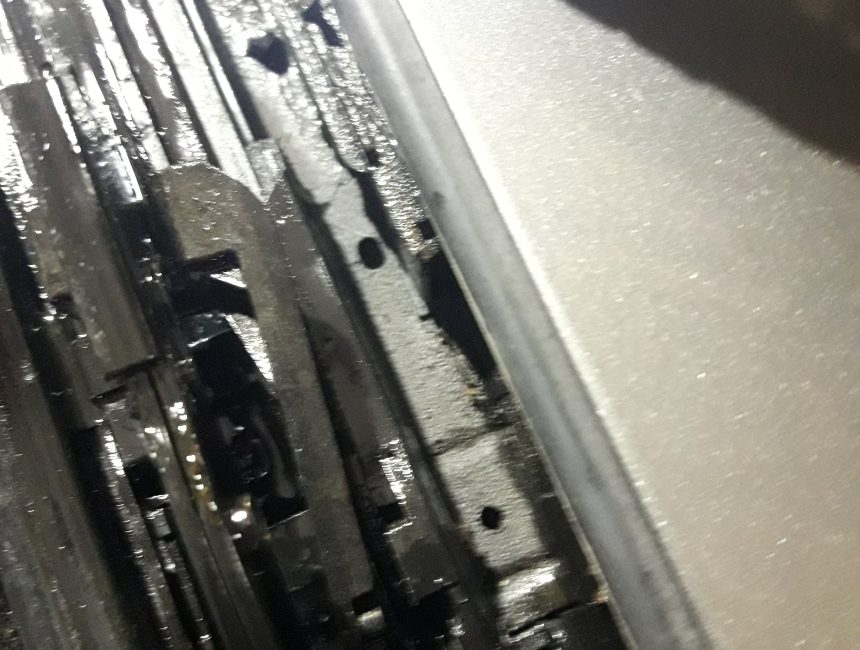

2015 — el principio
Todo comenzó con vehículos que requerían un enfoque especial.
Coches Benejúzar está especializado en la reparación de capotas de cabrio y sistemas complejos relacionados con ellas. Aquí no solo importan los materiales y la mecánica, sino también un diagnóstico preciso: sistemas hidráulicos, electrónica, sensores y mecanismos de plegado.
Trabajamos en reparaciones que muchos talleres prefieren no asumir. Para nosotros, cada capota es un sistema que debe entenderse, repararse correctamente y devolver a un funcionamiento fiable.
